1. Mục đích và phạm vi
Xếp lịch làm việc là bước chuyển các ca và mẫu lịch đã cấu hình thành lịch làm việc theo từng ngày của từng nhân viên. Lịch ngày là căn cứ để nhân viên xem lịch, thực hiện chấm công, tổng hợp công và phục vụ tính lương. Tài liệu này hướng dẫn đầy đủ ba nghiệp vụ: sinh lịch tự động cho nhân viên ca cố định; người quản lý xếp lịch thủ công cho nhân viên ca linh hoạt; nhân viên tự đăng ký ca và người có thẩm quyền duyệt đăng ký.
Tài liệu Ca và lịch làm việc đã giải thích cách tạo Ca làm việc và Lịch làm việc cố định. Tài liệu Quản lý thông tin công việc của Nhân viên đã giải thích cách gán hình thức làm việc, lịch cố định và các thông tin công việc. Hai nội dung đó là điều kiện đầu vào của tài liệu này; người dùng nên hoàn tất trước khi bắt đầu xếp lịch.
2. Hiểu đúng chuỗi dữ liệu xếp lịch
| Thành phần | Ý nghĩa và vai trò |
|---|---|
| Ca làm việc | Là khung giờ chuẩn, ví dụ 08:30–17:30. Ca có thể thuộc một chi nhánh hoặc dùng chung tùy dữ liệu được thiết lập. |
| Lịch làm việc cố định | Là mẫu lặp theo tuần từ Thứ 2 đến Chủ nhật, cho biết mỗi ngày sử dụng ca nào hoặc không làm việc. |
| Thông tin công việc | Xác định nhân viên làm Ca cố định hay Ca linh hoạt. Nhân viên Ca cố định bắt buộc có Lịch làm việc cố định. |
| Lịch làm việc theo ngày | Là kết quả cuối cùng sau khi sinh tự động, xếp thủ công hoặc duyệt đăng ký. Mỗi bản ghi có ngày, giờ bắt đầu, giờ kết thúc, ca, chi nhánh và nguồn hình thành. |
| Chấm công và tính lương | Sử dụng lịch theo ngày để xác định thời gian phải làm, đối chiếu thời điểm chấm vào/chấm ra, tính đi muộn, về sớm, thiếu công, làm thêm và các kết quả lương liên quan. |
| Ba nguồn lịch có thể cùng xuất hiện trên hệ thống Tự động là lịch sinh từ mẫu cố định; Thủ công là lịch do người quản lý xếp hoặc ghi đè; Đăng ký là lịch được tạo sau khi yêu cầu đăng ký ca được duyệt hoàn tất. Nguồn lịch giúp truy vết lịch được hình thành bằng cách nào. |
3. Điều kiện chuẩn bị và quyền truy cập
3.1. Dữ liệu cần chuẩn bị
- Tạo đầy đủ Chi nhánh, Phòng ban và vị trí công việc đang hoạt động của nhân viên.
- Tạo các Ca làm việc cần sử dụng; kiểm tra giờ bắt đầu, giờ kết thúc và chi nhánh.
- Với nhân viên làm lịch ổn định, tạo Lịch làm việc cố định theo tuần và bảo đảm lịch thuộc đúng chi nhánh có vị trí công việc đang hoạt động.
- Trong hồ sơ nhân viên, mở Thông tin công việc và chọn đúng Hình thức làm việc. Nếu chọn Ca cố định, gán thêm Lịch làm việc cố định.
- Nếu cho phép tự đăng ký ca, tạo ít nhất một Quy trình phê duyệt loại Duyệt đăng ký ca, cấu hình đúng người xử lý và đặt quy trình ở trạng thái Hoạt động.
- Phân quyền Xếp lịch làm việc cho người quản lý và Duyệt đăng ký ca cho người có thẩm quyền.
3.2. Hình thức làm việc của nhân viên
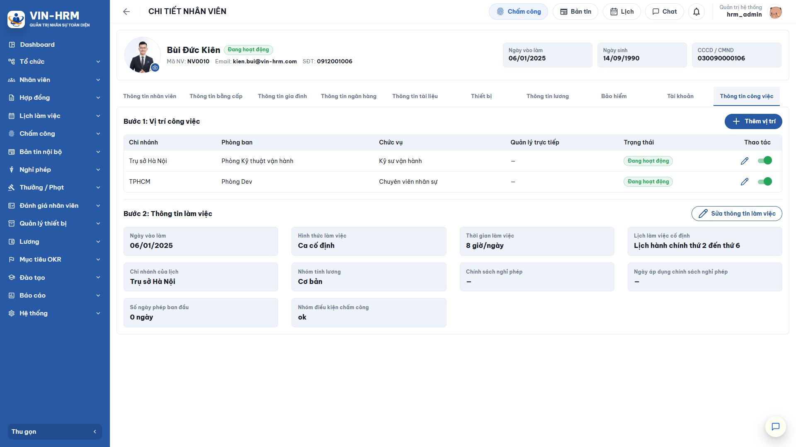
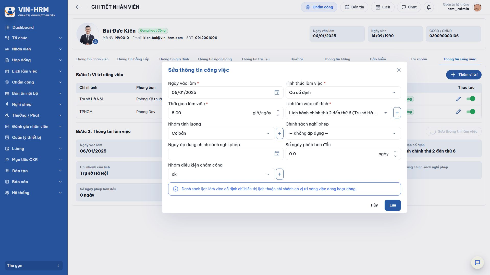
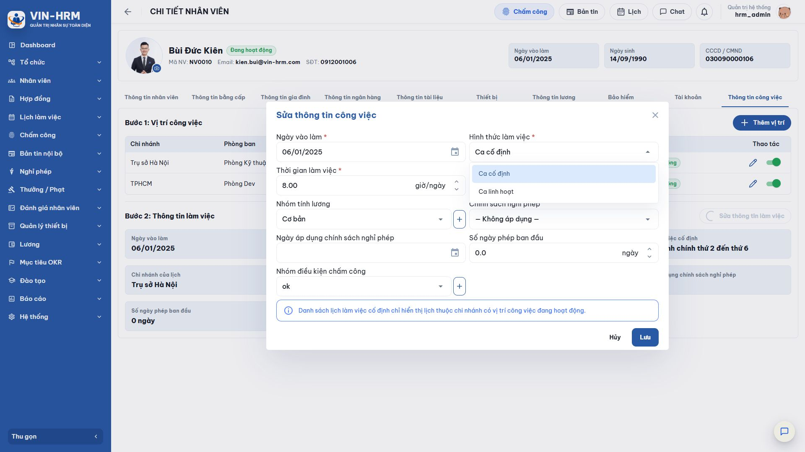
| Lựa chọn | Ý nghĩa | Cách xếp lịch phù hợp |
|---|---|---|
| Ca cố định | Nhân viên làm theo một mẫu tuần ổn định. Khi chọn loại này, Lịch làm việc cố định là thông tin bắt buộc. | Sinh lịch tự động từ mẫu. Chỉ dùng xếp thủ công khi cần xử lý ngoại lệ có chủ đích. |
| Ca linh hoạt | Nhân viên không lặp một mẫu tuần cố định, thường làm theo ca thay đổi từng ngày hoặc từng kỳ. | Người quản lý xếp thủ công; hoặc nhân viên tự đăng ký ca rồi chờ duyệt. |
| Phải thống nhất chi nhánh Ca, lịch cố định và vị trí công việc của nhân viên phải cùng phạm vi chi nhánh. Danh sách lịch cố định trong hồ sơ nhân viên chỉ hiển thị các lịch thuộc chi nhánh có vị trí công việc đang hoạt động. |
3.3. Quyền và phạm vi dữ liệu
| Quyền/chủ thể | Phạm vi sử dụng |
|---|---|
| Xếp lịch làm việc | Cho phép mở màn hình Xếp lịch làm việc, sinh lịch tự động, xếp thủ công và ghi đè. Nhân viên được chọn phải thuộc phòng ban nằm trong phạm vi phân quyền của tài khoản. |
| Duyệt đăng ký ca | Cho phép mở danh sách Duyệt đăng ký ca. Việc có được bấm duyệt/từ chối còn phụ thuộc tài khoản có phải người xử lý của bước hiện tại hay không. |
| Nhân viên | Có thể mở Đăng ký ca làm việc và theo dõi yêu cầu của chính mình. Chủ yêu cầu mới được gửi, thu hồi hoặc xóa yêu cầu của mình theo trạng thái cho phép. |
| Phạm vi chi nhánh/phòng ban | Người xếp lịch chỉ thấy và xử lý nhân viên có vị trí công việc đang hoạt động ở chi nhánh, phòng ban phù hợp với phạm vi quyền. |
4. Cấu hình liên quan đến xếp lịch
4.1. Chu kỳ tự động xếp lịch làm việc là gì?
Chu kỳ tự động xếp lịch làm việc là lịch chạy nền định kỳ để hệ thống tự tạo lịch theo ngày cho nhân viên Ca cố định. Cấu hình này không tạo Ca làm việc và không tạo Lịch làm việc cố định; nó chỉ quyết định khi nào hệ thống lấy mẫu cố định đã có để sinh lịch ngày.
Cấu hình được sử dụng trực tiếp bởi phân hệ Lịch làm việc. Kết quả sinh ra tiếp tục được sử dụng ở Lịch của tôi, Chấm công, các báo cáo công và Tính lương khi doanh nghiệp tính lương dựa trên dữ liệu chấm công.
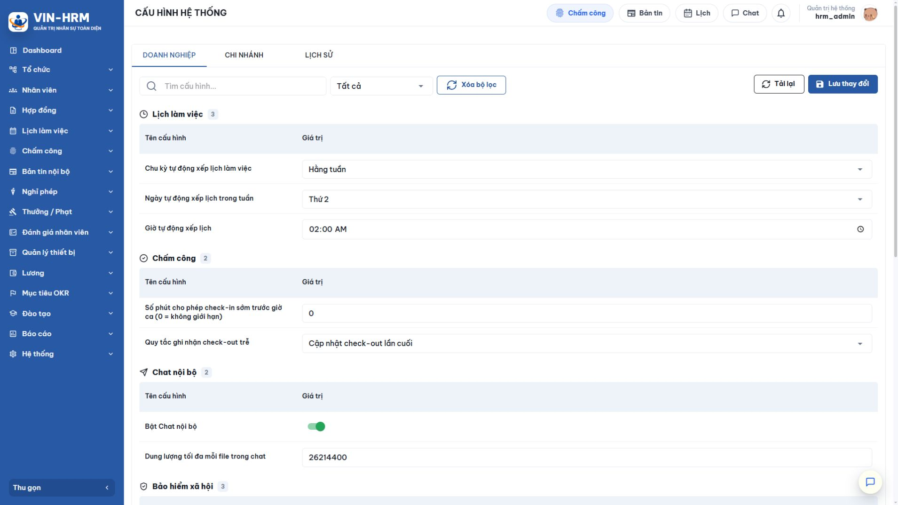
4.2. Ý nghĩa từng cấu hình và từng lựa chọn
| Cấu hình | Giá trị/lựa chọn | Ý nghĩa áp dụng |
|---|---|---|
| Chu kỳ tự động xếp lịch làm việc | Hằng tuần | Đến ngày và giờ đã cấu hình, hệ thống sinh lịch từ ngày chạy cho 7 ngày liên tiếp. Phù hợp đơn vị lập kế hoạch theo tuần. |
| Chu kỳ tự động xếp lịch làm việc | Hằng tháng | Đến ngày và giờ đã cấu hình, hệ thống sinh lịch từ ngày chạy đến hết tháng. Phù hợp đơn vị muốn chuẩn bị lịch theo tháng. |
| Ngày tự động xếp lịch trong tuần | Thứ 2 đến Chủ nhật | Chỉ được dùng khi chu kỳ là Hằng tuần. Đây là ngày trong tuần hệ thống bắt đầu sinh lịch cho 7 ngày kế tiếp. |
| Ngày tự động xếp lịch trong tháng | 1 đến 31 | Chỉ được dùng khi chu kỳ là Hằng tháng. Nếu chọn 29, 30 hoặc 31 mà tháng hiện tại không có ngày đó, hệ thống sử dụng ngày cuối cùng của tháng. |
| Giờ tự động xếp lịch | Giờ:phút, ví dụ 02:00 | Thời điểm trong ngày bắt đầu tác vụ. Nên chọn giờ ít thao tác để hạn chế thay đổi dữ liệu đồng thời. Hệ thống kiểm tra lịch chạy định kỳ trong nền nên có thể có độ trễ ngắn so với phút cấu hình. |
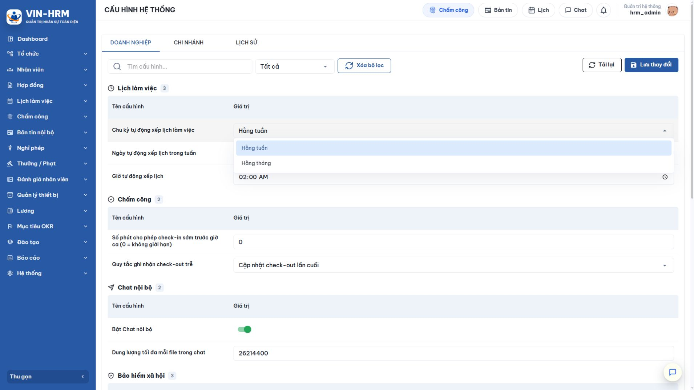
4.3. Cấp doanh nghiệp, cấp chi nhánh và thứ tự ưu tiên
Mở Hệ thống > Cấu hình. Cấu hình có thể được đặt ở thẻ Doanh nghiệp hoặc Chi nhánh. Khi hệ thống sinh lịch cho một chi nhánh, thứ tự xác định giá trị là:
- Dùng cấu hình của Chi nhánh nếu chi nhánh đó có giá trị riêng.
- Nếu chi nhánh chưa có giá trị riêng, dùng cấu hình của Doanh nghiệp.
- Nếu cả hai cấp chưa có, dùng mặc định hệ thống: Hằng tuần, Thứ 2, lúc 02:00.
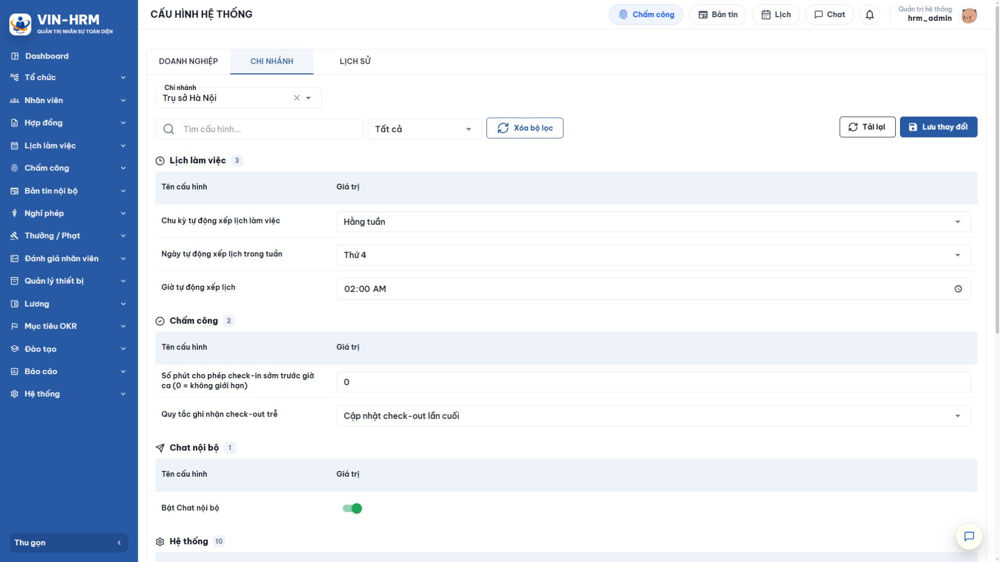
| Ví dụ cách ưu tiên Doanh nghiệp cấu hình Hằng tuần vào Thứ 2 lúc 02:00; riêng Trụ sở Hà Nội cấu hình Thứ 4 lúc 02:00. Trụ sở Hà Nội chạy vào Thứ 4, các chi nhánh không có cấu hình riêng vẫn chạy vào Thứ 2. |
4.4. Quy trình phê duyệt đăng ký ca
Đăng ký ca không tự tạo lịch ngay khi nhân viên gửi. Yêu cầu phải gắn với một quy trình loại Duyệt đăng ký ca. Quy trình quy định các bước, người xử lý và thứ tự xử lý. Chỉ quy trình đang Hoạt động, hợp lệ và có thể xác định người duyệt mới xuất hiện để chọn.
Mở Hệ thống > Quy trình phê duyệt, tạo hoặc kiểm tra quy trình Duyệt đăng ký ca. Nếu có nhiều quy trình, đặt tên rõ phạm vi áp dụng, ví dụ theo chi nhánh, khối nhân sự hoặc loại ca; hướng dẫn nhân viên chọn đúng quy trình thay vì chọn theo tên gần giống.
5. Đọc màn hình Xếp lịch làm việc
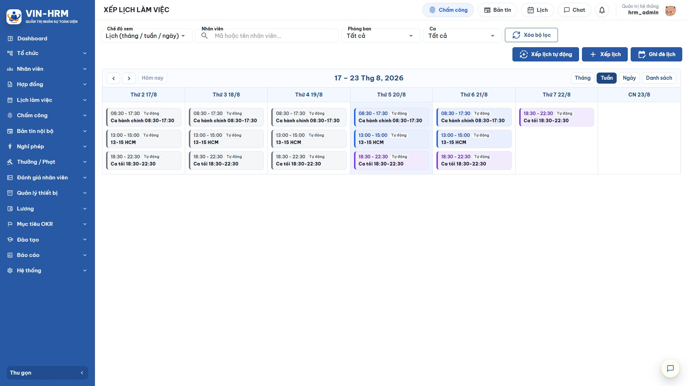
5.1. Đường dẫn và bộ lọc
Mở Lịch làm việc > Xếp lịch làm việc. Người dùng có thể lọc theo nhân viên, phòng ban và ca; chọn Xóa bộ lọc để trở lại trạng thái ban đầu.
| Thành phần | Cách sử dụng |
|---|---|
| Chế độ xem | Chọn Lịch để xem theo Tháng/Tuần/Ngày; các nút Tháng, Tuần, Ngày, Danh sách ở góc lịch giúp đổi cách đọc dữ liệu. |
| Nhân viên | Nhập mã hoặc tên để thu hẹp lịch của một người. |
| Phòng ban | Chỉ hiển thị ca của nhân viên thuộc phòng ban được chọn. |
| Ca | Chỉ hiển thị lịch sử dụng ca được chọn. |
| Mũi tên/Hôm nay | Chuyển kỳ lịch trước/sau hoặc trở về ngày hiện tại. |
| Nhãn nguồn | Mỗi khối lịch có nhãn Tự động, Thủ công hoặc Đăng ký để nhận biết nguồn hình thành. |
5.2. Ba nút nghiệp vụ
| Nút | Khi nào sử dụng |
|---|---|
| Xếp lịch tự động | Sinh lịch từ mẫu cố định cho nhân viên Ca cố định; có thể áp dụng cho tất cả, một phòng ban hoặc các nhân viên được chọn. |
| Xếp lịch | Gán một ca trong một khoảng ngày cho nhân viên hoặc phòng ban. Đây là cách chính để xếp lịch cho nhân viên Ca linh hoạt. |
| Ghi đè lịch | Thay lịch Tự động/Thủ công trong khoảng ngày bằng một hoặc nhiều ca mới. Dùng để điều chỉnh ngoại lệ; lịch nguồn Đăng ký đã duyệt được bảo vệ. |
6. Xếp lịch tự động cho nhân viên Ca cố định
6.1. Điều kiện nhân viên được đưa vào sinh lịch
Hệ thống chỉ sinh lịch khi đồng thời thỏa các điều kiện:
- Nhân viên đang hoạt động và có vị trí công việc đang hoạt động.
- Hình thức làm việc là Ca cố định.
- Đã gán Lịch làm việc cố định còn hoạt động.
- Lịch cố định, ca trong mẫu và vị trí công việc phù hợp với chi nhánh được chọn.
- Ngày cần sinh có một ca trong mẫu tuần; ngày không có ca trong mẫu sẽ được bỏ qua.
6.2. Thực hiện sinh lịch thủ công theo yêu cầu
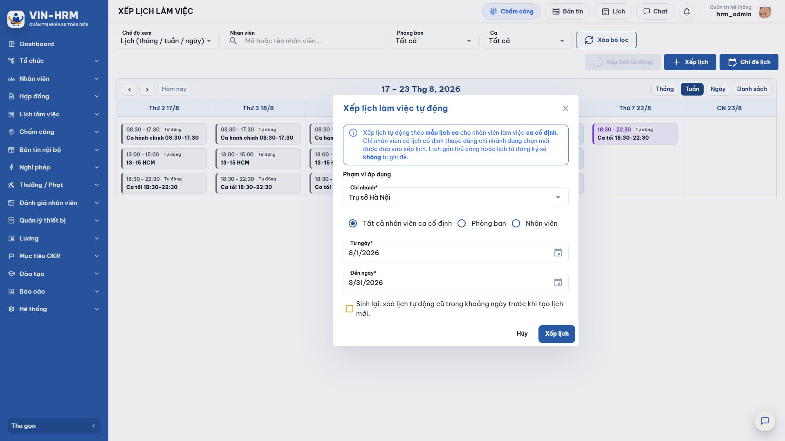
- Mở Lịch làm việc > Xếp lịch làm việc và chọn Xếp lịch tự động.
- Chọn Chi nhánh. Hệ thống dùng chi nhánh để lọc nhân viên, mẫu lịch và ca.
- Chọn một phạm vi: Tất cả nhân viên ca cố định, Phòng ban hoặc Nhân viên.
- Nhập Từ ngày và Đến ngày. Mặc định biểu mẫu lấy toàn bộ tháng đang xem.
- Chỉ bật Sinh lại khi cần xóa lịch tự động cũ trong khoảng ngày và tạo lại từ mẫu hiện tại.
- Chọn Xếp lịch, đọc thông tin xác nhận nếu khoảng ngày có ngày lễ/ngày nghỉ bù, sau đó xác nhận nếu phạm vi là đúng.
- Đọc kết quả gồm số lịch đã tạo, số đã bỏ qua, số lịch cũ đã xóa, số nhân viên đã xử lý và các cảnh báo.
6.3. Ý nghĩa phạm vi áp dụng
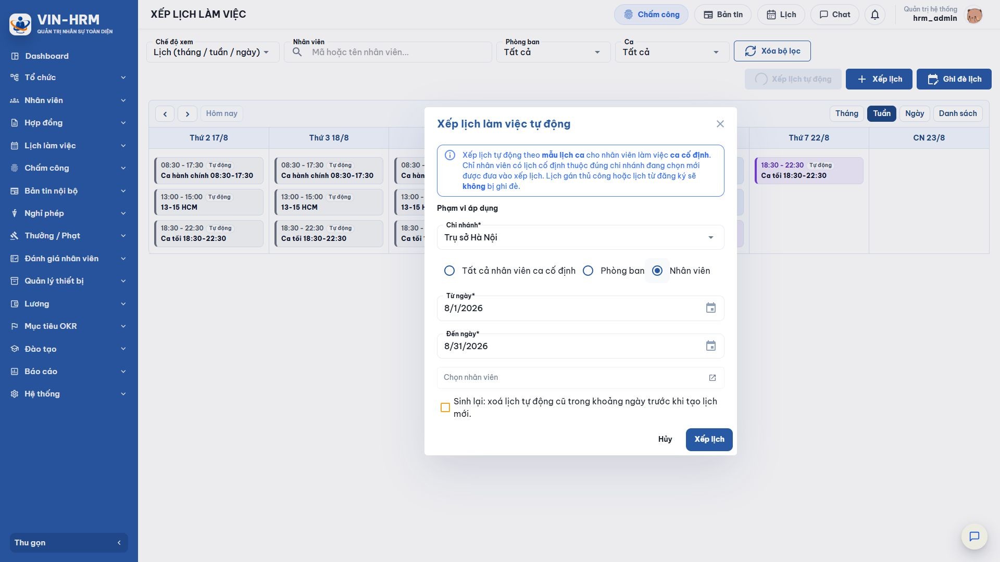
| Lựa chọn | Ý nghĩa |
|---|---|
| Tất cả nhân viên ca cố định | Sinh cho toàn bộ nhân viên Ca cố định có mẫu hợp lệ trong chi nhánh. Phù hợp chạy đầu tuần/đầu tháng. |
| Phòng ban | Chỉ sinh cho nhân viên Ca cố định thuộc phòng ban được chọn trong chi nhánh. Phù hợp khi một đơn vị thay đổi mẫu lịch. |
| Nhân viên | Chọn một hoặc nhiều nhân viên cụ thể. Danh sách chỉ gồm nhân viên Ca cố định có mẫu; phù hợp bổ sung người mới hoặc xử lý trường hợp riêng. |
6.4. Quy tắc giữ nguyên, bỏ qua và sinh lại
| Tình huống | Hệ thống xử lý |
|---|---|
| Đã có đúng ca cùng ngày | Bỏ qua, không tạo bản ghi trùng. |
| Đã có lịch giao thời gian | Bỏ qua và đưa vào cảnh báo; không chèn thêm ca gây chồng giờ. |
| Ngày không có ca trong mẫu | Bỏ qua vì đây là ngày không làm theo mẫu cố định. |
| Ngày lễ hoặc ngày nghỉ bù | Phiên bản hiện tại bỏ qua, không sinh lịch tự động cho ngày đó. Thông báo xác nhận chỉ giúp người dùng nhận biết khoảng ngày có ngày đặc biệt. |
| Không bật Sinh lại | Chỉ bổ sung lịch còn thiếu; lịch Tự động, Thủ công và Đăng ký hiện có được giữ nguyên. |
| Bật Sinh lại | Xóa các lịch có nguồn Tự động trong đúng chi nhánh và khoảng ngày, sau đó tạo lại. Lịch Thủ công và lịch từ Đăng ký không bị xóa. |
| Chỉ bật Sinh lại khi mẫu đã thay đổi Nếu lịch cố định được sửa sau khi đã sinh lịch, có thể dùng Sinh lại để đồng bộ. Trước khi chạy, cần kiểm tra khoảng ngày và đối tượng vì toàn bộ lịch nguồn Tự động trong phạm vi sẽ bị thay thế. |
6.5. Sinh lịch tự động theo chu kỳ cấu hình
Khi đến ngày và giờ cấu hình, hệ thống tự chạy cho từng chi nhánh bằng cùng quy tắc với nút Xếp lịch tự động nhưng không bật Sinh lại. Chu kỳ Hằng tuần sinh từ ngày chạy đến 6 ngày sau; chu kỳ Hằng tháng sinh từ ngày chạy đến hết tháng. Vì không xóa lịch cũ, tác vụ nền phù hợp để bổ sung lịch còn thiếu và không làm mất các điều chỉnh thủ công hoặc lịch đăng ký đã duyệt.
7. Xếp lịch thủ công cho nhân viên Ca linh hoạt
7.1. Trường hợp sử dụng
Xếp thủ công được dùng khi lịch thay đổi theo nhu cầu vận hành, ví dụ cửa hàng phân ca từng tuần, bộ phận làm việc luân phiên, nhân viên thời vụ hoặc lịch ngoại lệ. Đối tượng nghiệp vụ chính là nhân viên Ca linh hoạt.
| Màn hình hiện tại không khóa cứng theo hình thức làm việc Danh sách xếp thủ công có thể hiển thị cả nhân viên đang hoạt động không phải Ca linh hoạt. Người quản lý phải kiểm tra đúng hình thức làm việc và chỉ chọn nhân viên Ca cố định khi thật sự cần tạo ngoại lệ có chủ đích. |
7.2. Các bước xếp một ca
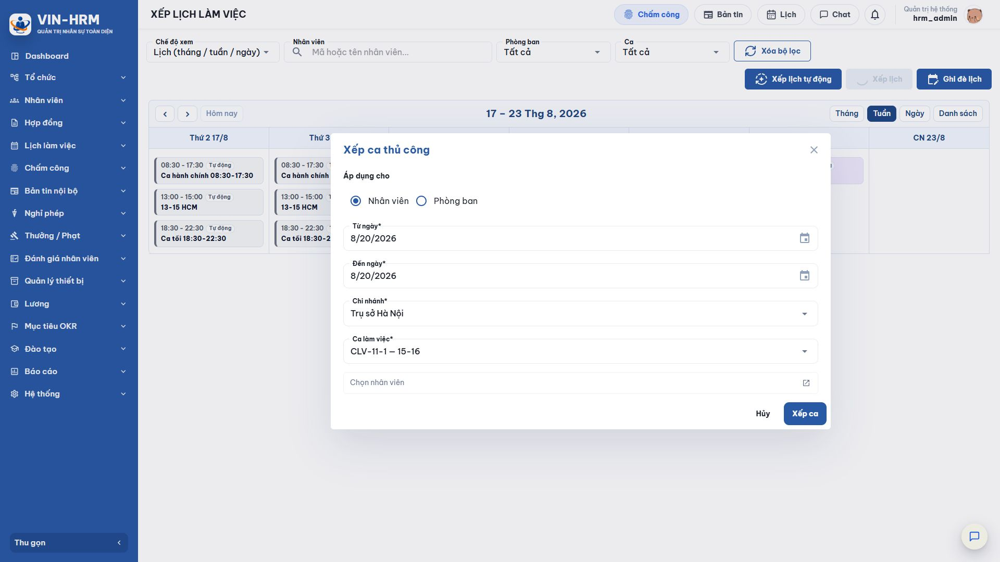
- Mở Lịch làm việc > Xếp lịch làm việc và chọn Xếp lịch.
- Chọn Áp dụng cho: Nhân viên nếu cần chọn từng người; chọn Phòng ban nếu toàn bộ nhân viên trong phòng cùng dùng một ca.
- Chọn Từ ngày và Đến ngày. Hệ thống sẽ áp dụng ca cho từng ngày trong khoảng.
- Chọn Chi nhánh và Ca làm việc. Danh sách ca chỉ gồm ca đang hoạt động, dùng chung hoặc phù hợp chi nhánh.
- Chọn nhân viên/phòng ban. Với cách chọn nhân viên, hệ thống kiểm tra trước các ca trùng thời gian.
- Chọn Xếp ca. Nếu khoảng ngày có ngày lễ/nghỉ bù, đọc thông báo và chỉ xác nhận khi doanh nghiệp thực sự bố trí làm trong ngày đó.
7.3. Kiểm tra trùng ca
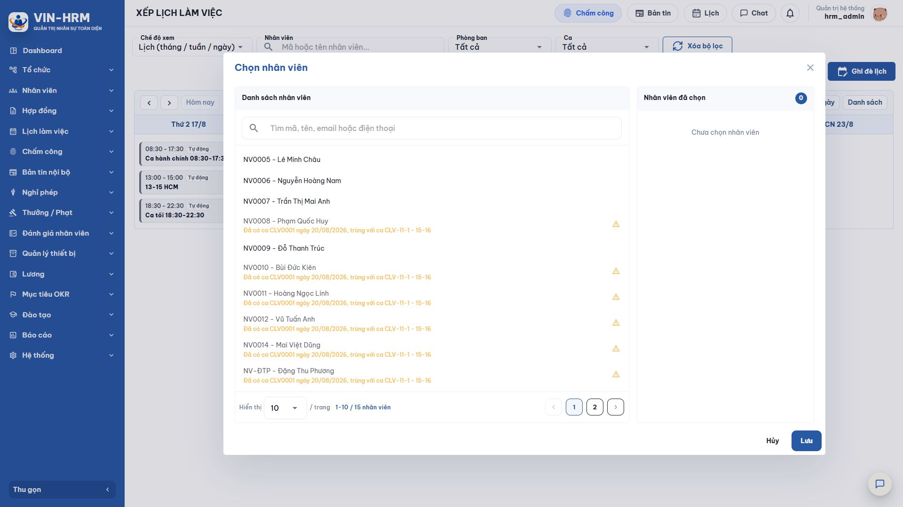
Một lần Xếp lịch chỉ gán một ca cho các đối tượng đã chọn. Nếu một nhân viên đã có lịch giao thời gian trong bất kỳ ngày nào của khoảng chọn, hệ thống không cho tạo chồng ca. Khi gửi yêu cầu, hệ thống kiểm tra lại toàn bộ; nếu còn xung đột, thao tác bị dừng để tránh tình trạng một phần nhân viên được tạo còn một phần thất bại.
Nếu cần một nhân viên làm nhiều ca trong ngày, sử dụng Ghi đè lịch và chọn nhiều ca không chồng thời gian, hoặc lập từng lịch theo quy trình vận hành phù hợp.
7.4. Ghi đè lịch
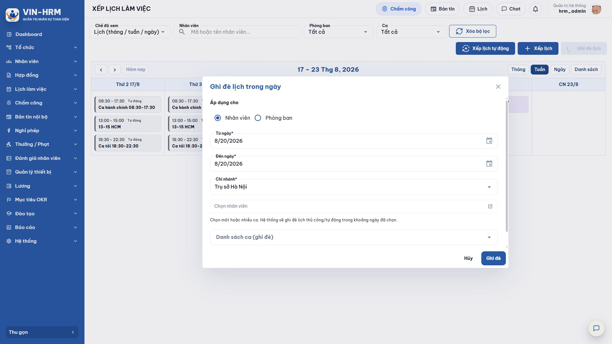
| Nội dung | Quy tắc |
|---|---|
| Đối tượng | Chọn theo nhân viên hoặc phòng ban, tương tự Xếp lịch. |
| Danh sách ca | Có thể chọn một hoặc nhiều ca cho mỗi ngày; các ca mới không được chồng thời gian với nhau. |
| Lịch bị thay thế | Các lịch nguồn Tự động và Thủ công trong cùng chi nhánh, khoảng ngày và đối tượng sẽ bị xóa trước khi tạo lịch mới. |
| Lịch được bảo vệ | Lịch nguồn Đăng ký đã duyệt và lịch của chi nhánh khác không bị xóa. |
| Xung đột với lịch đăng ký | Nếu ca mới giao thời gian với lịch nguồn Đăng ký, hệ thống chặn ghi đè. Cần xử lý yêu cầu/lịch đăng ký theo đúng nghiệp vụ, không dùng Ghi đè để xóa. |
| Ghi đè là thao tác thay thế dữ liệu Trước khi xác nhận, kiểm tra kỹ chi nhánh, khoảng ngày, đối tượng và danh sách ca. Nên dùng bộ lọc trên lịch để đối chiếu các lịch hiện có và thông báo cho nhân viên nếu lịch đã được công bố. |
8. Nhân viên tự đăng ký ca làm việc
8.1. Đối tượng và điều kiện
Nghiệp vụ này được thiết kế cho nhân viên Ca linh hoạt tự đề xuất ca phù hợp rồi chờ người quản lý duyệt. Nhân viên phải đang hoạt động; ngày đăng ký không được ở quá khứ; chi nhánh và ca phải đang hoạt động; yêu cầu không được giao thời gian với lịch đã có hoặc yêu cầu đang chờ xử lý.
| Lưu ý về kiểm soát ở phiên bản hiện tại Phần mềm hiện kiểm tra trạng thái nhân viên và trùng thời gian nhưng chưa khóa cứng thao tác tự đăng ký theo loại Ca linh hoạt. Doanh nghiệp cần quy định rõ đối tượng được đăng ký và hướng dẫn nhân viên Ca cố định không dùng chức năng này, trừ trường hợp được phê duyệt theo chính sách nội bộ. |
8.2. Tạo yêu cầu đăng ký ca thường
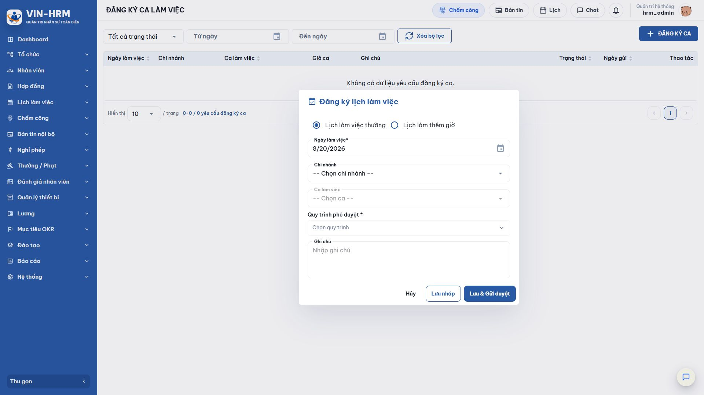
- Mở Lịch làm việc > Đăng ký ca làm việc và chọn ĐĂNG KÝ CA.
- Chọn Lịch làm việc thường.
- Chọn Ngày làm việc. Không chọn ngày đã qua.
- Chọn Chi nhánh, sau đó chọn Ca làm việc phù hợp.
- Chọn Quy trình phê duyệt. Kiểm tra tên quy trình đúng với đơn vị hoặc loại yêu cầu.
- Nhập Ghi chú nếu cần, tối đa 500 ký tự; nên nêu lý do hoặc thông tin bàn giao giúp người duyệt quyết định.
- Chọn Lưu nháp nếu chưa muốn gửi; hoặc Lưu & Gửi duyệt để tạo yêu cầu và bắt đầu quy trình.
8.3. Đăng ký lịch làm thêm giờ
| Trường | Ý nghĩa và kiểm tra |
|---|---|
| Ngày làm việc | Là ngày bắt đầu khoảng làm thêm, không được ở quá khứ. |
| Chi nhánh | Nơi thực hiện công việc và phạm vi tạo lịch sau khi được duyệt. |
| Giờ bắt đầu | Thời điểm bắt đầu làm thêm. |
| Giờ kết thúc | Nếu giờ kết thúc nhỏ hơn hoặc bằng giờ bắt đầu, hệ thống hiểu ca kết thúc vào ngày kế tiếp. Ví dụ 22:00–02:00 là ca qua đêm. |
| Quy trình phê duyệt | Luồng duyệt sử dụng cho yêu cầu. Doanh nghiệp có thể dùng một quy trình chung hoặc quy trình riêng cho làm thêm nếu đã cấu hình. |
8.4. Chọn quy trình phê duyệt
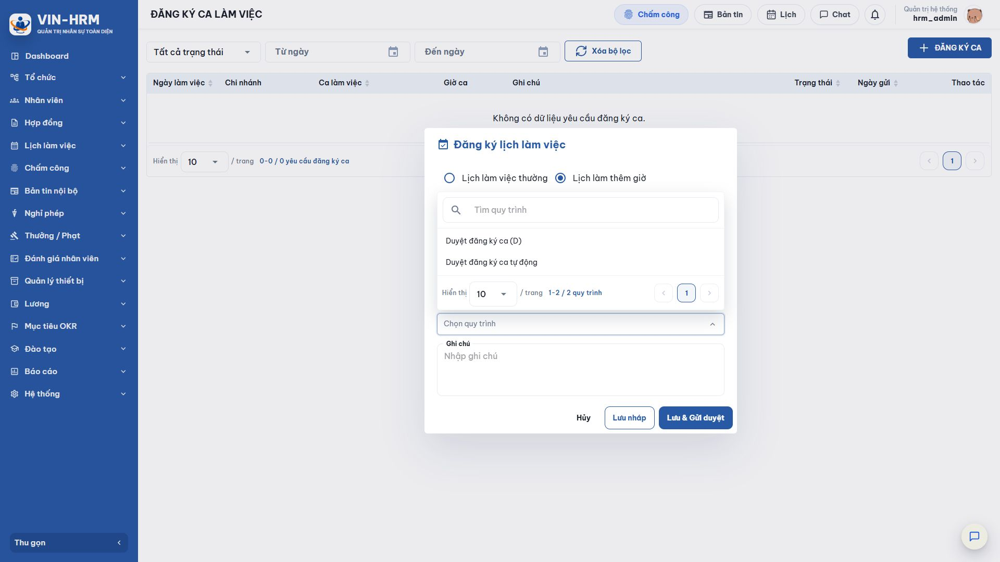
Khi có nhiều lựa chọn, không chọn ngẫu nhiên. Tên quy trình cần thể hiện rõ đối tượng; nếu chưa chắc, nhân viên hỏi người quản lý hoặc bộ phận nhân sự. Chọn sai quy trình có thể gửi yêu cầu đến sai người hoặc không xác định được người xử lý.
8.5. Trạng thái và thao tác của người đăng ký
| Trạng thái | Ý nghĩa | Thao tác thường có |
|---|---|---|
| Nháp | Yêu cầu đã lưu nhưng chưa gửi cho người duyệt; chưa có lịch làm việc. | Gửi duyệt hoặc Xóa. |
| Chờ duyệt | Yêu cầu đã tạo quy trình và đang chờ bước đầu xử lý. | Thu hồi về Nháp; phiên quy trình hiện tại được loại bỏ. |
| Đang xử lý | Một hoặc nhiều bước đã được xử lý nhưng quy trình chưa hoàn tất. | Thu hồi về Nháp; khi gửi lại, hệ thống tạo một phiên duyệt mới. |
| Đã duyệt | Tất cả bước đã hoàn tất và lịch nguồn Đăng ký đã được tạo. | Xem thông tin/lịch sử. |
| Từ chối | Người duyệt từ chối; lý do được lưu và không tạo lịch. | Xem lý do; tạo yêu cầu mới sau khi điều chỉnh nếu cần. |
9. Duyệt đăng ký ca và hình thành lịch
9.1. Mở danh sách công việc
Người có quyền mở Lịch làm việc > Duyệt đăng ký ca. Mặc định màn hình ưu tiên các yêu cầu Chờ xử lý. Có thể lọc theo chi nhánh, ca, trạng thái, từ ngày và đến ngày.
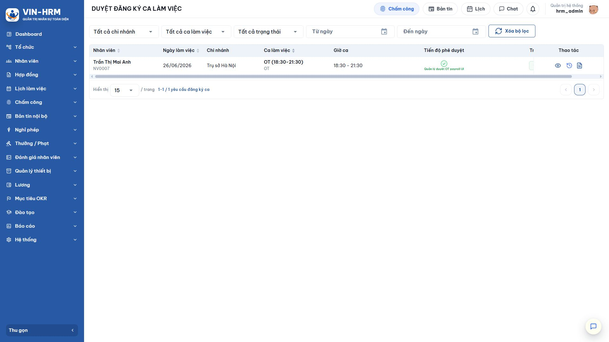
9.2. Ý nghĩa bộ lọc trạng thái công việc
| Lựa chọn | Ý nghĩa |
|---|---|
| Chờ xử lý | Các yêu cầu mà tài khoản là người xử lý của bước hiện tại và chưa thực hiện hành động. |
| Đã xử lý | Các yêu cầu tài khoản đã thực hiện bước được giao; quy trình có thể đã hoàn tất hoặc còn tiếp tục ở bước sau. |
| Tất cả trạng thái | Hiển thị cả yêu cầu Chờ xử lý và Đã xử lý thuộc phạm vi công việc của tài khoản, giúp tra cứu lịch sử. |
9.3. Các bước duyệt
- Lọc hoặc chọn yêu cầu cần xử lý; đối chiếu Nhân viên, Ngày làm việc, Chi nhánh, Ca/Giờ ca và tiến độ phê duyệt.
- Mở biểu tượng xem chi tiết để đọc ghi chú, quy trình, người xử lý và lịch sử các bước.
- Kiểm tra nhu cầu nhân sự, giới hạn số người theo ca, xung đột lịch, ngày lễ và quy định làm thêm của doanh nghiệp.
- Nếu đồng ý, chọn hành động Duyệt và xác nhận. Nếu không đồng ý, chọn Từ chối và nhập lý do cụ thể để nhân viên biết cách điều chỉnh.
- Nếu còn bước sau, yêu cầu chuyển sang người xử lý kế tiếp. Nếu đây là bước cuối, hệ thống kiểm tra trùng lịch lần cuối rồi tạo lịch nguồn Đăng ký.
| Được duyệt về nội dung chưa chắc đã tạo được lịch Ngay trước khi tạo lịch ở bước cuối, hệ thống kiểm tra lại xem nhân viên đã có lịch giao thời gian hay chưa. Nếu có xung đột phát sinh trong lúc yêu cầu đang chờ duyệt, thao tác hoàn tất bị chặn; người quản lý cần xử lý xung đột rồi thực hiện lại theo quy trình. |
9.4. Kết quả sau phê duyệt
Sau khi duyệt hoàn tất, yêu cầu chuyển sang Đã duyệt và một lịch làm việc theo ngày được tạo với nguồn Đăng ký. Lịch này xuất hiện trên Xếp lịch làm việc và Lịch của tôi, đồng thời được dùng cho chấm công. Ghi đè lịch không tự xóa lịch nguồn Đăng ký; đây là cơ chế bảo vệ kết quả đã qua phê duyệt.
10. Kiểm tra kết quả và nguồn lịch
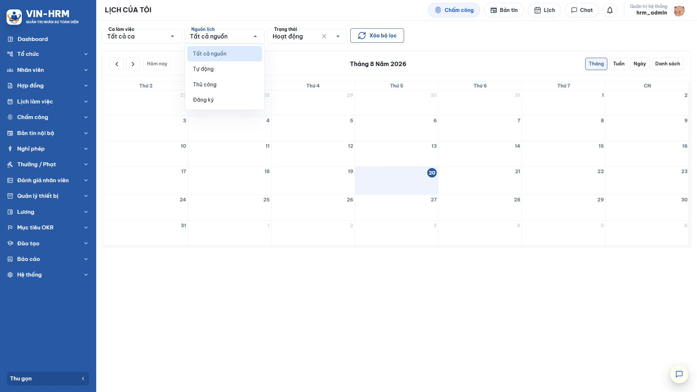
- Người quản lý mở Xếp lịch làm việc, chọn đúng tuần/tháng và lọc theo nhân viên để xác nhận ngày, ca và nhãn nguồn.
- Nhân viên mở Lịch làm việc > Lịch của tôi.
- Dùng bộ lọc Nguồn lịch: Tự động, Thủ công hoặc Đăng ký; có thể kết hợp bộ lọc Ca và Trạng thái.
- Đối chiếu giờ ca với kế hoạch, thông báo phê duyệt và yêu cầu đăng ký.
- Nếu lịch sai, báo người quản lý trước thời điểm chấm công; không tạo thêm một yêu cầu giao thời gian để “sửa” lịch cũ.
10.1. Ý nghĩa trạng thái lịch
| Trạng thái | Ý nghĩa |
|---|---|
| Hoạt động | Lịch đang có hiệu lực và được sử dụng cho hiển thị, chấm công và các nghiệp vụ liên quan. |
| Đã hủy | Lịch không còn hiệu lực. Giữ lại để tra cứu thay vì coi như một lịch làm việc hiện hành. |
11. Lỗi thường gặp và cách xử lý
| Hiện tượng | Nguyên nhân thường gặp | Cách kiểm tra/xử lý |
|---|---|---|
| Nhân viên không xuất hiện khi sinh lịch tự động | Không phải Ca cố định; chưa có mẫu; nhân viên/vị trí/mẫu ngừng hoạt động; sai chi nhánh. | Mở Thông tin công việc, kiểm tra Hình thức làm việc, Lịch cố định, Chi nhánh của lịch và vị trí công việc đang hoạt động. |
| Đã chạy nhưng một số ngày không có lịch | Mẫu tuần không có ca; ngày lễ/nghỉ bù; đã có lịch trùng hoặc giao thời gian. | Đọc cảnh báo kết quả, xem mẫu theo đúng thứ trong tuần và kiểm tra lịch hiện có. |
| Sinh lại không thay đổi lịch thủ công/đăng ký | Đúng theo thiết kế: Sinh lại chỉ xóa nguồn Tự động. | Dùng Ghi đè để thay lịch Thủ công; xử lý lịch Đăng ký theo nghiệp vụ phê duyệt, không kỳ vọng Sinh lại xóa. |
| Không chọn được nhân viên khi xếp thủ công | Đã có ca giao thời gian trong khoảng ngày hoặc ngoài phạm vi quyền. | Đọc dòng cảnh báo trùng ca; đổi ca/ngày hoặc xử lý lịch hiện có; kiểm tra quyền phòng ban. |
| Không thấy ca cần chọn | Ca ngừng hoạt động hoặc thuộc chi nhánh khác. | Kiểm tra danh mục Ca làm việc và chi nhánh đang chọn. |
| Không thấy quy trình đăng ký ca | Quy trình sai loại, ngừng hoạt động hoặc không hợp lệ. | Mở Quy trình phê duyệt, kiểm tra loại Duyệt đăng ký ca, trạng thái, bước và người xử lý. |
| Không gửi được yêu cầu đăng ký | Ngày đã qua; thiếu chi nhánh/ca/giờ/quy trình; trùng lịch hoặc trùng yêu cầu đang chờ. | Kiểm tra đầy đủ trường bắt buộc, chọn ngày tương lai và đối chiếu Lịch của tôi. |
| Duyệt bước cuối bị chặn | Trong thời gian chờ duyệt, nhân viên đã được tạo một lịch giao thời gian. | Mở Xếp lịch làm việc để xác định lịch xung đột; điều chỉnh theo thẩm quyền rồi xử lý lại. |
| Lịch tự động không chạy đúng ngày mong muốn | Chi nhánh có cấu hình riêng ghi đè cấp doanh nghiệp; chọn sai chu kỳ/ngày/giờ. | Kiểm tra cả thẻ Doanh nghiệp và Chi nhánh; đối chiếu thứ tự ưu tiên tại mục 4.3. |
12. Danh sách kiểm tra trước khi đưa vào vận hành
- Ca làm việc đã đúng giờ và đúng chi nhánh.
- Lịch làm việc cố định đã đủ các ngày cần làm trong tuần.
- Nhân viên đã có vị trí công việc đang hoạt động và đúng chi nhánh.
- Hình thức làm việc đã chọn đúng Ca cố định hoặc Ca linh hoạt.
- Nhân viên Ca cố định đã được gán Lịch làm việc cố định.
- Chu kỳ, ngày và giờ sinh lịch đã được kiểm tra ở cả cấp Doanh nghiệp và Chi nhánh.
- Người quản lý có quyền Xếp lịch làm việc đúng phạm vi phòng ban.
- Quy trình Duyệt đăng ký ca đang hoạt động và có người xử lý hợp lệ.
- Người duyệt có quyền Duyệt đăng ký ca và đã được gán vào bước quy trình.
- Đã thống nhất quy định đối tượng được tự đăng ký, thời hạn đăng ký, số lượng người mỗi ca và cách xử lý ngày lễ/làm thêm.
- Đã chạy thử trên một phạm vi nhỏ và đối chiếu Lịch của tôi trước khi chạy toàn chi nhánh.
- Đã thông báo cho nhân viên cách đọc nhãn nguồn và thời điểm lịch được công bố.